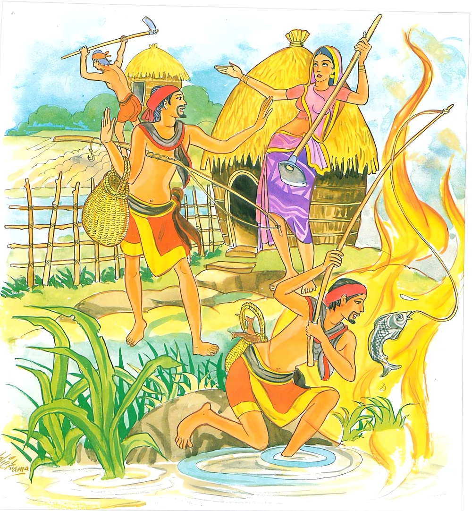

22-9 තීර්ථ සාවකයන් පිළිබඳව කථා පුවත
මෙම කතාව සද්ධර්ම සාගරයෙන් ද කියවන්න.
අවජ්ජෙ වජ්ජමතිනො වජ්ජෙ චාවජ්ජදස්සිනො
මිච්ඡාදිට්ඨිසමාදානා සත්තා ගච්ඡන්ති දුග්ගතිං.
නිරවද්ය ධර්මයන් පිළිබඳ වැ මෙය සාවද්ය යැ යි හටගත් බුද්ධි ඇති, සාවද්ය ධර්මයෙහි නිරවද්ය යැ යි දක්නා සුලු වූ, මෙ බඳු විපරීත ලබ්ධිය පිළිගෙණ හැසිරෙණ සත්ත්වයෝ දුගතියට පැමිණෙත්.

වජ්ජං ච වජ්ජතො ඤත්වා අවජ්ජං ච අවජ්ජතො
සම්මාදිට්ඨිසමාදානා සත්තා ගච්ඡන්ති සුග්ගතිං.
සාවද්ය ධර්මයන් සාවද්ය වශයෙන් ද නිරවද්යාධර්මයන් නිරවද්ය ධර්ම වශයෙන් ද තත් වූ පරිදි දැන අවිපරීත වු ලබ්ධිය පිළිගෙණ හැසිරෙන සත්ත්වයෝ සුගතියට පැමිණෙත්.
"අවජ්ජෙ” යන මේ ධර්ම දේශනය ශාස්තෲන් වහන්සේ දෙව්රම වැඩ සිටියදී තීර්ථක ශ්රාවකයන් අරමුණු කරගෙන දේශනා කළහ.
එක් සමයෙක අන්ය තීර්ථකයන්ගේ දායකයෝ තම පුතුන්, සම්යදෘෂ්ටික උපාසක වරුන්ගේ පුතුන් සමග පිරිවරාගෙන ක්රීඩා කරණු දැක, ඔවුන් ගෙට ආ කළ තෙපි ශාක්ය පුත්රයන් නොවැදිය යුතුය. ඔවුන්ගේ විහාරවලට නොයායුතුයයි තීර්ථකදායකයන් විසින් දිවුරුම් ගන්නා ලදී. ඔවුහු ද එක්දිනක් දෙව්රම් වෙහෙරට පිටත දොරටුව අසල ක්රීඩා කරමින් පිපාසිතව සිටියාහුය. එක්තරා උපාසක දරුවෙක් එක් ළමයෙකුට කථා කොට නුඹ එහි ගොස් පැන්ඛී අපටද පැන් රැගෙන එන්නැයි විහාරයට යැවුහ. ඔහු විහාරයට පිවිස බුදුන් වැඳ ජලය පානය කොට එම අදහස දැන්වීය. ඉක්බිති ශාස්තෲන් වහන්සේ ඔබ පැන් පානය කර ගොස් අන්අයටද පැමිණ පැන් පානය කිරීමට එවන්නැයි ඔහුට වදාළහ. ඔහු ද පැමිණ පැන් පානය කළහ. බුදුහු ඔවුන් කැඳවා ඔවුන්ට ගැලපෙන ධර්මයක් දේශනා කොට ඔවුන් අචල ශ්රද්ධාවේ පිහිටුවා සරණ ශීලයෙහි පිහිටවුහ. ඔවුහු ඔවුන්ගේ ගෙවල්වලට ගියපසු මේ කරුණ දෙමාපියන්ට දන්වා සිටියහ. අනතුරුව ඔවුන්ගේ දෙමාපියෝ පුත්රයෝ පෙරලු දෘෂ්ටි ඇත්තෝ වුවෝයයි. දොම්නසට පත්ව ඇඩුහ. ඔවුන් අතර පවුල බොහෝ වු අසල් වැසියෝ පැමිණ දොස සංසිඳවනු සඳහා ධර්ම කීවාහුය. ඔවුහු ඔවුන්ගේ කථාව අසා මේ දරුවන් භවත් ගෞතමයන්ටම පාවාදෙමුයි මහත් ඥාතීන් සමග විහාරයට ගෙන ගියහ. ශාස්තෲන් වහන්සේ ඔවුන්ගේ අදහස් බලා ධර්මදේශනා කරන්නේ මේ ගාථාව වදාළහ.
වරද නිවරද යයි - නිවරද වරද වේමැයි
වැරදි සිතිවිළි ගැනුම ජීවිතේ මරණයයි
වැරදි දැන වැරදි සේ - එයින් මිදෙනා දනෝ
සුගතියට යනෝ - සදිටු සිත් ගැනීමෙන්
නිවරද කරුණෙහි වරදයයි අදහස ඇති වරදෙහි නිවැරදියයි දැකුම ඇති - මිසදිටු ගැනීම ඇති සත්වයෝ දුගතියට යති.
වරද වරදලෙස දැන - නිවරද දේ නිවැරදි ලෙසට දැන නිවැරදි (සම්මා) දෘෂ්ටිය ගන්නාවු සත්වයෝ සුගතියට යන්නාහුය.
එහි අවජ්ජෙති - දසවස්ථුක සම්මා දෘෂ්ටියත් ඒ ඇසුරු කොට ඇති ධර්මත්, වජ්ජමතිනොති - මෙය වරදයයි උපන් අදහස් ඇති දසවස් තත් වැරදි දෘෂ්ටියෙහි මිථ්යාදෘෂ්ටියෙහි උපනිශ්රය ධර්මයෙහි නිවරද දකින. මෙසේ අවජ්ජං වජ්ජති, වජ්ජංච අවජ්ජති නිවරද වරද ලෙසද වරද නිවරද ලෙසද දැන හඳුනාගෙන මිථ්යා දෘෂ්ටිය ගත් අය මිච්ඡා දිට්ඨි සමාදානා, සත්තා දුග්ගතිං ගච්ඡන්ති - සත්වයෝ නිරයට යන අර්ථය දෙවැනි ගාථාවේ කියන ලද ලෙසට වෙනස් වු අර්ථය දතයුතුය. දේශනාවසානයේ ඒ සියල්ලෝ තිසරණයේ පිහිටා නැවත නැවතද ධර්මය අසා සෝවාන් ඵලයෙහි පිහිටියාහුය.
.
නිරය වර්ග වර්ණනය නිමාවිය.
විසි දෙවෙනි වර්ගයයි.